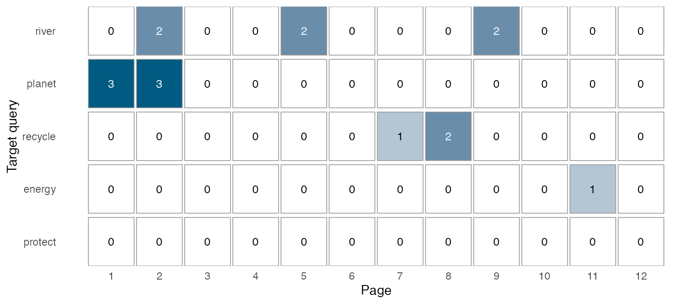
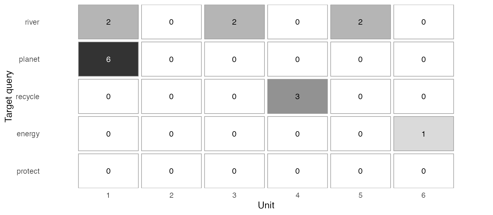

Trace target vocabulary through textbook pages and units
Source:vignettes/textbook-progression.Rmd
textbook-progression.RmdA word can occur six times in one opening unit or return in three different units. Total frequency cannot distinguish those arrangements. This guide asks where selected words occur, and whether they return after their declared teaching unit. It connects saved concordance matches to a book’s section roster, then displays counts without losing absent targets or unobserved parts.
Use development ldfreq 0.4.0.9003 or later, optional
quanteda >= 4.5.0 for searching, and
ggplot2 for drawing. See the installation
instructions. Stable 0.4.0 does not include this example. The two
helpers in examples/textbook-progression.R are explicitly
sourced installed examples, not exported functions. The script also
loads the unchanged concordance helpers.
Begin with an inspectable example
library(ldfreq)
demo <- new.env(parent = globalenv())
sys.source(system.file("examples", "textbook-progression-demo.R",
package = "ldfreq", mustWork = TRUE), demo)
helper <- demo$helper
x <- demo$progression
x$summary[c("query_id", "occurrences", "first_observed_page",
"last_observed_page", "observed_units_with_hits")]
#> query_id occurrences first_observed_page last_observed_page
#> 1 river 6 2 9
#> 2 planet 6 1 2
#> 3 recycle 3 7 8
#> 4 energy 1 11 11
#> 5 protect 0 NA NA
#> observed_units_with_hits
#> 1 3
#> 2 1
#> 3 1
#> 4 1
#> 5 0These are authored texts for a 12-page, six-unit book, not actual
textbook observations or learner outcomes. river and
planet both occur six times. river occurs in
Units 1, 3 and 5; planet occurs only in Unit 1.
protect is a declared target with no occurrences. Page 10
is a known blank page. The example explicitly supplies lowercase lemmas
and maps recycled to recycle; it does not run
an automatic lemmatizer.
helper$textbook_progression_plot(x, by = "page")
Each cell gives a count of saved matches. The default is colour; use
monochrome = TRUE for a grey scale with the same numeric
labels. Zero means no matches within the selected, completely observed
scope. NA means the exact count is unknown. An em dash
means that no section on that page was selected, whose contribution to
the selected-scope total is zero. Place figure numbers, titles and
explanatory notes outside the plot. Use a selected target list and an
appropriate output width for long books; the helper does not paginate or
automatically suppress labels.
helper$textbook_progression_plot(x, by = "unit", monochrome = TRUE)
The Unit view makes the same counts readable at a coarser scale. For
a cumulative count at each page or Unit, set
cumulative = TRUE. This displays counts, not a learning
curve. The exact cumulative total becomes NA from the first
incomplete selected part onward; observed_cumulative in the
table retains the known-match lower bound without presenting it as the
exact total.
Supply your own book, order and target list
First prepare complete source-aligned annotations and call
concordance_search() as shown in concordance and dispersion.
Use one document ID for one book, with a segment for each declared
section. Include punctuation in the annotation input before applying a
search selection. Do not replace missing text with an empty string.
Import only the observed sections; list the unobserved sections in the
separate roster below.
| Table or argument | Required information |
|---|---|
search |
One unchanged concordance result for exactly one book. Patterns, lexical unit, exclusions, original text and occurrence IDs remain attached. |
sections |
One row per declared section: document_id, unique
segment_id, positive whole-number page and
unit, nonblank role, and logical
observed. Rows follow page and Unit order. Multiple
sections on a page are allowed; a page belongs to one Unit. |
targets |
One row for every saved query_id, including absent
targets, and introduction_unit: a Unit in the roster or
numeric NA when unknown. Row order sets the displayed
target order. |
include |
One logical value per section, without missing values. The default includes all sections; an explicit mask can select body text, exercises or another declared scope. |
All and only observed = TRUE rows must match the saved
source segments, including their original order. Unobserved rows have no
source segment. Declare the complete intended page/section inventory:
the helper cannot detect omitted pages, OCR errors or an incomplete
inventory from the text alone. Page/Unit numbers are ordering
coordinates, not automatically extracted printed labels. Store edition,
volume, printed labels, original files and actual teaching dates
alongside the analysis when needed.
helper <- new.env(parent = globalenv())
sys.source(system.file("examples", "textbook-progression.R",
package = "ldfreq", mustWork = TRUE), helper)
# search was created from your complete observed source annotations.
progression <- helper$textbook_progression(search, sections, targets,
include = sections$role %in% c("body", "exercise"))
helper$textbook_progression_plot(progression, by = "unit")Use the supplied surface, lemma or another justified annotation as the search unit. A word-family search needs an explicitly supplied mapping and a suitable query; it is not inferred from spelling. Preserve the mapping and its source. The existing search also supports multi-token queries. Matches cannot cross section boundaries, so dividing the text at each page will exclude a phrase split across a page break. This limitation must suit the intended analysis. Overlapping or duplicated query patterns are counted separately; summing different queries is not unique-word coverage.
The default max_cells = 1e6 bounds the combined
page-by-query and Unit-by-query tables before allocating them. The
search has its own allocation limits. Neither bound guarantees a
particular memory footprint or readable plot size.
Distinguish absence, missingness and excluded sections
Suppose an exercise on page 7 has not been transcribed:
s <- demo$sections
missing_exercise <- s[7, ]
missing_exercise$segment_id <- "p07-exercise"
missing_exercise$role <- "exercise"
missing_exercise$observed <- FALSE
missing_exercise$text <- NA_character_
s <- rbind(s[1:7, ], missing_exercise, s[8:12, ])
incomplete <- helper$textbook_progression(demo$search, s, demo$targets)
subset(incomplete$pages, query_id == "recycle" & page >= 7,
select = c(page, observed_occurrences, occurrences, cumulative, status))
#> page observed_occurrences occurrences cumulative status
#> 31 7 1 NA NA incomplete
#> 32 8 2 2 NA ok
#> 33 9 0 0 NA ok
#> 34 10 0 0 NA ok
#> 35 11 0 0 NA ok
#> 36 12 0 0 NA okOne occurrence is known on page 7, but the page total is unknown because the exercise is missing. The helper retains that known occurrence and its original context. Unit 4 and the whole-book exact total are also unknown. The observed counts are lower bounds under the saved matching and annotation conditions, not estimates of how many words would be found after correcting OCR or lemmas.
Missing or blank search annotations on retained tokens also make a selected section incomplete. A deliberately excluded token is different: it defines the search scope and does not by itself create missingness. An unobserved section excluded by the explicit section mask does not invalidate the selected scope either:
body <- helper$textbook_progression(demo$search, s, demo$targets,
include = s$role == "body")
stopifnot(identical(body$summary$occurrences, x$summary$occurrences))These counts now describe body text only. They do not establish the absence of additional practice elsewhere. Keep vocabulary boxes, instructions, answer keys and indexes identifiable so that repeated printed words are not silently treated as equivalent learning activities.
Assess recurrence after a declared introduction
x$summary[c("query_id", "introduction_unit", "later_units",
"complete_later_units", "later_occurrences", "later_unit_coverage", "later_status")]
#> query_id introduction_unit later_units complete_later_units later_occurrences
#> 1 river 1 5 5 4
#> 2 planet 1 5 5 0
#> 3 recycle 4 2 2 0
#> 4 energy 6 0 0 NA
#> 5 protect 2 4 4 0
#> later_unit_coverage later_status
#> 1 0.4 ok
#> 2 0.0 ok
#> 3 0.0 ok
#> 4 NA no_later_units
#> 5 0.0 okThe reference point is the caller’s teaching
introduction, not automatically the first occurrence. Later
units are units strictly after it that have at least one selected
section. Thus within-Unit repetitions and later-Unit recurrence are
distinct. later_unit_coverage is the proportion of those
later units with at least one saved match, calculated only when every
such unit is complete. It is descriptive coverage, not a
recycling-quality score.
In the example, river appears four times in two of the
five later units. planet has five observable later units
but no further occurrences. energy is introduced in the
last unit: its later-unit count is zero and coverage is NA
with no_later_units, not a failed recycling score. An
unknown introduction produces unknown_introduction; missing
material in the later scope produces
incomplete_later_units. Missingness confined to the
introduction unit need not invalidate the separate later scope.
first_observed_page and last_observed_page
are the bounds of known matches. If some material is missing, they need
not be the actual first and last occurrences. Different page or Unit
lengths affect opportunities to encounter words. Keep raw encounter
counts for this question; comparing lexical concentration additionally
requires explicitly defined exposure denominators. The existing
within-document DP partitions original token slots, not these page/Unit
boundaries, and is not a substitute for the progression display.
Return from counts to the original uses
subset(x$occurrences, query_id == "river" & included & unit > 1,
select = c(occurrence_id, page, unit, role, pre, keyword, post))
#> occurrence_id page unit
#> 3 1b3e7c307fa6d1bf8aa97ac6073bcd4dbea8aea0bb80baf58bb3385f9b8091c0 5 3
#> 4 ff1800721debbcbe3ba6099c0e1579d4fd8e9e23281f3b54cda1370d56efb422 5 3
#> 5 6b125932446a7cd88cd1380e03ded6fabdbafebd74beac7625678075c3fb266f 9 5
#> 6 e21b689218fc6ab7433bb59984b9933ba543593b443bbe1cd30fa0eebf944bb2 9 5
#> role pre keyword post
#> 3 body The river is clean. We
#> 4 body . We cross the river .
#> 5 body The river reaches the sea.
#> 6 body Birds live near the river .The table retains all saved occurrences with an included
flag; filter that flag when explaining a displayed count. Original
segment IDs, character spans, contexts and occurrence IDs are unchanged.
Reading those contexts can separate the same sentence repeated from
different senses, collocations or tasks. Further pedagogical coding is a
separate recorded judgment.
Repeated printed appearances indicate opportunities in the selected material, not actual learner exposure, successful retrieval or vocabulary acquisition. Page gaps do not measure elapsed teaching time. Neither a fixed repetition threshold nor a widely spread pattern establishes effective spiral instruction; the material, tasks and learning evidence must support that interpretation.
Save and reopen without rerunning the search
record <- list(progression = x, session = utils::sessionInfo())
saved <- tempfile(fileext = ".rds") # Use a lasting private path for research data.
saveRDS(record, saved)
restored <- readRDS(saved)
stopifnot(identical(restored, record))Keep the full record, including original text, roster, introduction choices, queries and inclusion mask. The plot checks the saved record’s integrity and does not tokenize or search again. In a fresh R session:
library(ldfreq)
helper <- new.env(parent = globalenv())
sys.source(system.file("examples", "textbook-progression.R",
package = "ldfreq", mustWork = TRUE), helper)
record <- readRDS("textbook-record.rds") # Your actual saved path.
record$progression$summary
helper$textbook_progression_plot(record$progression, by = "unit")Reopening tables requires ldfreq’s required packages; drawing also requires ggplot2. No new quanteda search, parser or model is needed. Preserve the original calculation session rather than replacing its versions with those of the reopening session. Fingerprints detect accidental record changes; they do not validate the correctness of source transcriptions, lemmas or teaching metadata.